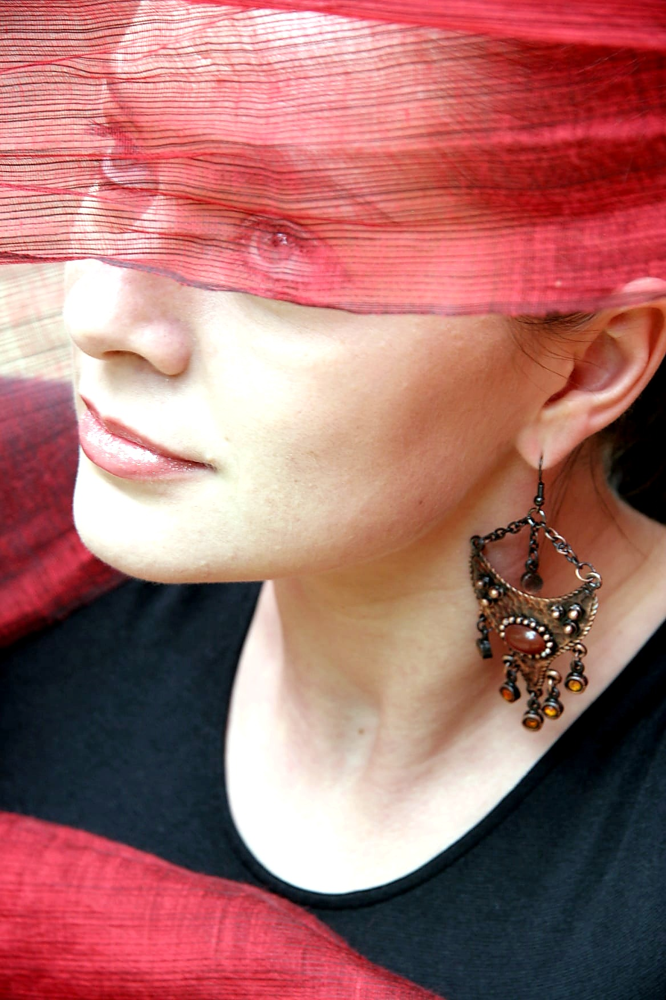

two founders • comfort-first design
About
We combine strong planning, technical accuracy and editorial taste to create spaces that feel harmonious, comfortable and truly yours — and look stylish without template solutions.
Anastasia Finch
Architectural Planner & Interior Designer
Anastasia’s first degree is in medicine — she worked as a doctor and audiologist...

Natalia Orudzheva
Interior Design, Decor & Styling Expert
Natalia’s first degree is in writing...